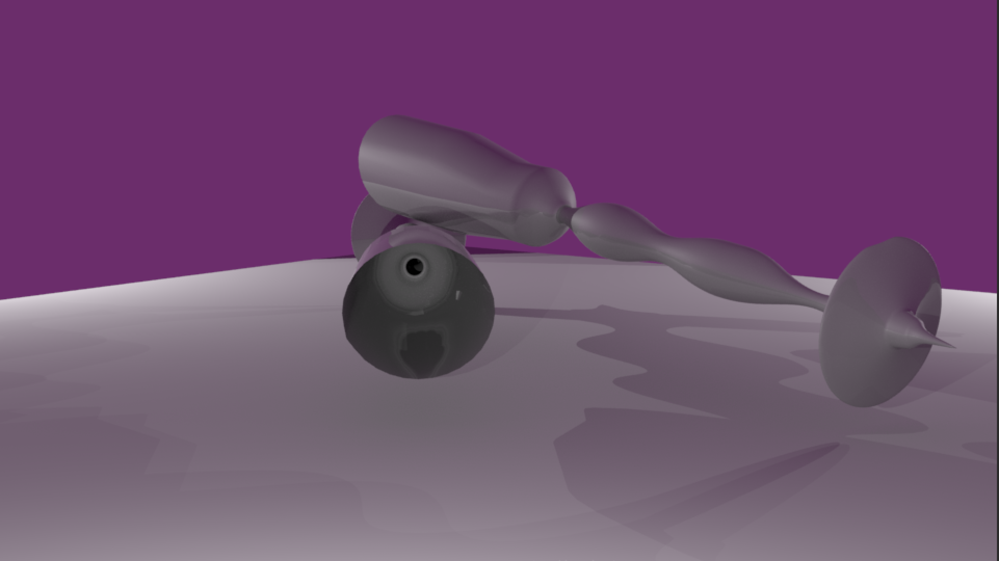

KYRA SYCIP
Maya Models
PenCilate
| ART-102 Project - Fall 2020 at San Jose State University - Medium: Maya |
This artwork is inspired by the way the brain interacts with the use of a pen or pencil by the use of the hand. By creating a prosthetic that is in place of a hand-held pen and is used as an extension of the finger, “drawing” straight into reality becomes a possibility. I was inspired by what the future may consider or use as a pen or pencil. Would we even need paper in 2057, if any is left? Could it be possible that we would abandon all manually-worked tools and opt for anything and everything electric?
Using simple polygonal models, I morphed and manipulated various shapes to create this prosthetic. The end goal was oriented around the notion of a “futuristic” pen, and what it may look like if it were to be used in fifty or so years from now. “Ink” could be placed into the tip through the slim hole within the main entrance for the fingertip. This is to be used by pointing your finger, and simply drawing into reality. This project taught me a lot of patience, but most importantly just how vast one’s imagination can extend to, if given the future.

~
Textures
| ART-102 Project - Fall 2020 at San Jose State University - Medium: Maya |
After learning aboout textures and 3D Modeling via Maya, I was put to the test of utilizing what I've learned in to this artwork. This exercize
incorporated different textures such as glass, plastic, jade, water, bump, and metals. I was inspired by the different textures used and how they
reflected off different surfaces. A galaxy HDRI image was used to receive the shiny reflection on the objects. This artwork reminded me of what it was like
to play with marbles as a child and how difficult it was to align them all perfectly with one another. It was a bittersweet feeling that occured to me during
the creation of this artwork.